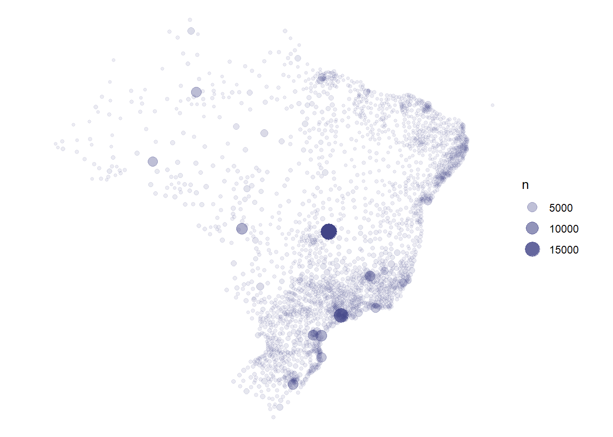
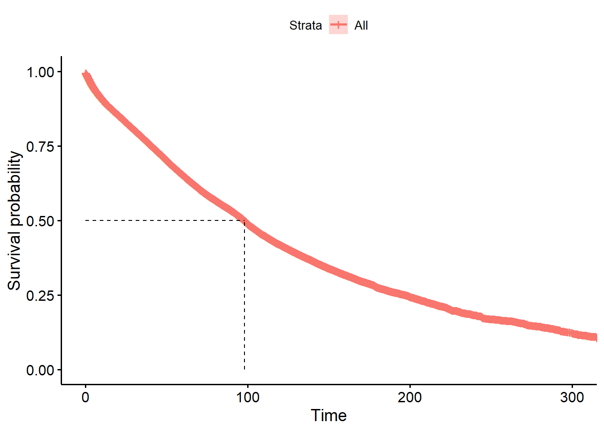
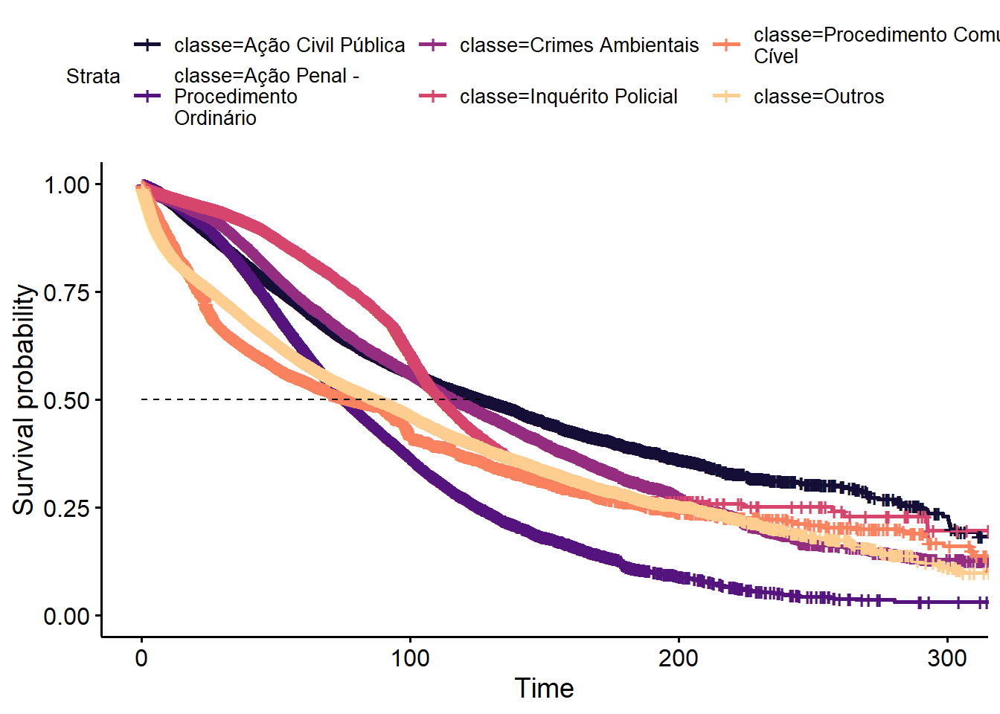
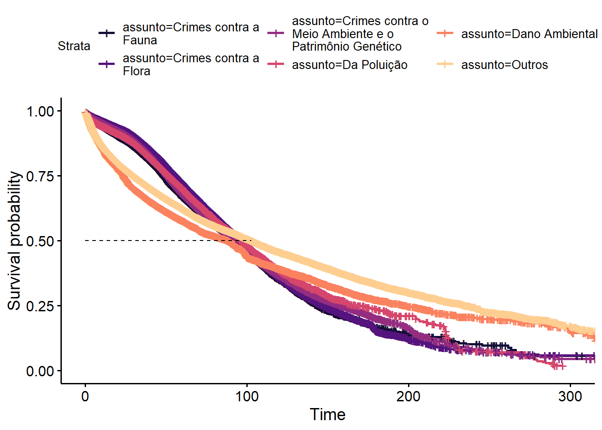

Análise exploratória do SireneJud
Este relatório mostra uma análise exploratória de dados (Exploratory Data Analysis, EDA) da base de dados do SireneJud. A base foi baixada no dia 04/09/2022, a partir de um arquivo CSV, contendo 588.197 linhas e 26 colunas. A base foi baixada a partir do link de dados abertos da ferramenta do SireneJud.
Sobre a base de dados
A base de dados do SireneJud apresenta uma estrutura comum de bases de dados judiciais, contendo três unidades amostrais distintas: processos, partes e movimentações.
Os processos apresentam as seguintes colunas:
FID: ID único, linha da base.geom: geometria do ponto de origem (latitude e longitude).ano: ano de distribuição do processo.uf: unidade federativa de distribuição do processomunicipio: municipio de distribuição do processograu: grau originário do processo (G1: primeiro grau, G2: segundo grau, JE: juizado especial, TR: turma recursal, TRU: turma recursal unificada).esfera: federal ou estadual.tribunal: tribunal de origem do processoorgao: órgão julgador (vara, câmara etc)porte: porte do tribunal, segundo classificação do CNJ disponível no relatório Justiça em Númerosclasse: classe do processo segundo a SGT.assunto: códigos e nomes dos assuntos dos processos segundo a SGTdatas: início do processo, julgamento e baixado. Caso o processo esteja ativo, a data de julgamento ou baixado é vazia.tempo: tempo de tramitação até o dia de extração dos dados.julgamento: indicador de processo concluído ou em andamento.complexo: indicador de processo de alta complexidade.
Os dados de partes apresentam as seguintes colunas:
polo: ativo ou passivonome: nome da partesexo: sexo da parte (se pessoa física)tipo: jurídica ou físicadocumento: CNPJ da parte, se juridica, e vazia caso contrárionacionalidade: nacionalidade da parteassistencia: assistência judiciária gratuitaintimacao: intimação pendente
Os dados de movimentações apresentam as seguintes colunas:
data: data da movimentaçãograu: grau da movimentação (primeiro grau, segundo grau, etc)nome_situacao: nome da situaçãofase: fase processualtipo: tipo de procedimentonatureza: natureza do procedimentonome: nome do movimentojulgador: nome do julgadorcriminal: indicador de criminal
No momento, vamos analisar somente os dados de processos e partes. A análise das movimentações ficará para um estudo futuro.
Filtros
O primeiro passo da análise é realizar filtros para obter uma base que faz parte do escopo da pesquisa. O escopo da pesquisa ainda não está totalmente definido no momento de escrita do presente relatório, mas vamos fazer algumas escolhas para facilitar a análise.
Os filtros aplicados no momento são:
- Apenas processos originários no primeiro grau ou segundo grau (remover juizado especial e turma recursal).
- Remover processos de alta complexidade
- Remover duplicatas de número de processo (ordenamos por grau antes de tirar as duplicatas)
Código
da_basicas_filter <- da_basicas |>
dplyr::filter(
st_grau %in% c("G1", "G2"),
!sgt_complexo
) |>
dplyr::arrange(st_grau) |>
dplyr::distinct(id_processo, .keep_all = TRUE) |>
dplyr::select(-sgt_complexo, -id)Informações básicas
Código
n_estadual <- sum(da_basicas_filter$trib_esfera == "Estadual")
n_federal <- nrow(da_basicas_filter) - n_estadual
lab_estadual = glue::glue("{n_estadual} ({scales::percent(n_estadual/nrow(da_basicas_filter))})")
lab_tribunal_maior <- da_basicas_filter |>
dplyr::filter(trib_esfera == "Estadual") |>
dplyr::count(trib_tribunal, sort = TRUE) |>
dplyr::mutate(prop = scales::percent(n/sum(n), .1)) |>
dplyr::slice_head(n = 1) |>
with(glue::glue("{trib_tribunal}, com {n} ({prop})"))Do total de 353385 processos, 293987 (83%) são estaduais. Dentre os processos estaduais, o tribunal mais comum é o TJSP, com 57129 (19.4%) dos processos estaduais.
As 10 classes mais comuns dos processos estão na Tabela 1. Como as classes podem variar conforme a fase do processo (e.g. inquéito policial, cumprimento de sentença), é preciso tomar cuidado na hora de realizar filtros por essa variável.
Código
da_basicas_filter |>
dplyr::count(sgt_nm_classe, sort = TRUE) |>
dplyr::mutate(prop = formattable::percent(n/sum(n))) |>
dplyr::slice_head(n = 10) |>
knitr::kable()| sgt_nm_classe | n | prop |
|---|---|---|
| Inquérito Policial | 73437 | 20.78% |
| Ação Civil Pública | 47544 | 13.45% |
| Procedimento Comum Cível | 41865 | 11.85% |
| Ação Penal - Procedimento Ordinário | 32487 | 9.19% |
| Crimes Ambientais | 23793 | 6.73% |
| Agravo de Instrumento | 20113 | 5.69% |
| Termo Circunstanciado | 16316 | 4.62% |
| Ação Penal - Procedimento Sumário | 15976 | 4.52% |
| Apelação Cível | 11654 | 3.30% |
| Cumprimento de sentença | 10879 | 3.08% |
Os 10 assuntos mais comuns estão na Tabela 2. É possível notar que assuntos genéricos como “Dano Ambiental” e “DIREITO AMBIENTAL” são bastante presentes nos dados.
Código
da_basicas_filter |>
tidyr::unnest(sgt_nm_assunto) |>
dplyr::count(sgt_nm_assunto, sort = TRUE) |>
dplyr::mutate(prop = formattable::percent(n/sum(n))) |>
dplyr::slice_head(n = 10) |>
knitr::kable()| sgt_nm_assunto | n | prop |
|---|---|---|
| Dano Ambiental | 69078 | 18.54% |
| Crimes contra a Flora | 64439 | 17.30% |
| Crimes contra o Meio Ambiente e o Patrimônio Genético | 50652 | 13.59% |
| Crimes contra a Fauna | 29993 | 8.05% |
| Da Poluição | 23550 | 6.32% |
| Revogação/Anulação de multa ambiental | 17227 | 4.62% |
| Flora | 15976 | 4.29% |
| DIREITO AMBIENTAL | 14841 | 3.98% |
| Indenização por Dano Ambiental | 14777 | 3.97% |
| Pesca | 10245 | 2.75% |
As combinações de classes e assuntos mais comuns estão na Tabela 3. Aparentemente, as classes ajudam mais a pegar informações das fases (que estão disponíveis nas movimentações) do que do tipo de procedimento.
Código
da_basicas_filter |>
tidyr::unnest(sgt_nm_assunto) |>
dplyr::count(sgt_nm_classe, sgt_nm_assunto, sort = TRUE) |>
dplyr::mutate(prop = formattable::percent(n/sum(n))) |>
dplyr::slice_head(n = 10) |>
knitr::kable()| sgt_nm_classe | sgt_nm_assunto | n | prop |
|---|---|---|---|
| Inquérito Policial | Crimes contra a Flora | 28933 | 7.77% |
| Procedimento Comum Cível | Dano Ambiental | 27007 | 7.25% |
| Ação Civil Pública | Dano Ambiental | 17965 | 4.82% |
| Inquérito Policial | Crimes contra o Meio Ambiente e o Patrimônio Genético | 16173 | 4.34% |
| Inquérito Policial | Crimes contra a Fauna | 11477 | 3.08% |
| Ação Penal - Procedimento Ordinário | Crimes contra o Meio Ambiente e o Patrimônio Genético | 10183 | 2.73% |
| Inquérito Policial | Da Poluição | 9479 | 2.54% |
| Ação Penal - Procedimento Ordinário | Crimes contra a Flora | 9370 | 2.51% |
| Crimes Ambientais | Crimes contra a Flora | 7697 | 2.07% |
| Ação Civil Pública | Flora | 7552 | 2.03% |
Localização
A Figura 1 mostra os pontos em que os processos foram distribuídos. A maior parte dos casos foi distribuída em Brasília, o que a princípio não faz muito sentido.
Código
da_basicas_filter |>
dplyr::count(loc_lon, loc_lat) |>
ggplot2::ggplot() +
ggplot2::aes(loc_lon, loc_lat, size = n, alpha = n) +
ggplot2::geom_point(colour = viridis::viridis(1,1,.2,.8)) +
ggplot2::theme_void() +
ggplot2::coord_equal()
A Tabela 4 mostra os 10 municípios com mais processos. A maioria são capitais, o que é esperado, já que são municípios mais populosos.
Código
da_basicas_filter |>
dplyr::count(loc_uf, loc_muni, sort = TRUE) |>
dplyr::mutate(prop = formattable::percent(n/sum(n))) |>
head(10) |>
knitr::kable()| loc_uf | loc_muni | n | prop |
|---|---|---|---|
| DF | BRASÍLIA | 17990 | 5.09% |
| SP | SAO PAULO | 13643 | 3.86% |
| MT | CUIABA | 6865 | 1.94% |
| PR | PARANAGUA | 6750 | 1.91% |
| PR | CURITIBA | 5859 | 1.66% |
| MG | BELO HORIZONTE | 5619 | 1.59% |
| RS | PORTO ALEGRE | 5558 | 1.57% |
| AM | MANAUS | 5355 | 1.52% |
| RO | PORTO VELHO | 5097 | 1.44% |
| SC | FLORIANOPOLIS | 4576 | 1.29% |
A Tabela 5 mostra os municípios com maior litigiosidade (processos por 100 mil habitantes). É possível identificar que vários municípios pequenos (com menos de 10 mil habitantes) figuram entre os mais litigiosos.
Código
aux_pop <- da_basicas_filter |>
dplyr::count(loc_uf, loc_muni) |>
munifacil::limpar_colunas(loc_muni, loc_uf) |>
munifacil::incluir_codigo_ibge(diagnostico = FALSE) |>
dplyr::left_join(abjData::pnud_min, c("id_municipio" = "muni_id")) |>
dplyr::filter(ano == 2010)
aux_pop |>
dplyr::mutate(ilg = n / pop * 1e5) |>
dplyr::select(loc_uf, loc_muni, n, pop, ilg) |>
dplyr::arrange(dplyr::desc(ilg)) |>
dplyr::slice_head(n = 10) |>
knitr::kable()| loc_uf | loc_muni | n | pop | ilg |
|---|---|---|---|---|
| PR | BOCAIUVA DO SUL | 2389 | 10852 | 22014.375 |
| ES | ALFREDO CHAVES | 2570 | 13946 | 18428.223 |
| SE | SANTANA DO SAO FRANCISCO | 657 | 6946 | 9458.681 |
| MG | BONFIM | 347 | 6738 | 5149.896 |
| PR | PARANAGUA | 6750 | 139774 | 4829.224 |
| MG | AIURUOCA | 270 | 6047 | 4465.024 |
| MT | CLAUDIA | 400 | 10790 | 3707.136 |
| SP | IGUAPE | 1008 | 28565 | 3528.794 |
| SP | CANANEIA | 413 | 11900 | 3470.588 |
| SE | CEDRO DE SAO JOAO | 191 | 5598 | 3411.933 |
A Tabela 6 mostra os municípios com maior litigiosidade, considerando somente municípios com mais de 50 mil habitantes. Novamente aparecem algumas capitais e figuram entre os mais litigiosos municípios do sul e sudeste.
Código
aux_pop |>
dplyr::mutate(ilg = n / pop * 1e5) |>
dplyr::filter(pop > 5e4) |>
dplyr::select(loc_uf, loc_muni, n, pop, ilg) |>
dplyr::arrange(dplyr::desc(ilg)) |>
dplyr::slice_head(n = 10) |>
knitr::kable()| loc_uf | loc_muni | n | pop | ilg |
|---|---|---|---|---|
| PR | PARANAGUA | 6750 | 139774 | 4829.224 |
| SP | UBATUBA | 2136 | 78243 | 2729.957 |
| PA | BARCARENA | 2128 | 97780 | 2176.314 |
| PA | ALTAMIRA | 2025 | 93243 | 2171.745 |
| SP | SAO SEBASTIAO | 1065 | 73523 | 1448.526 |
| SP | REGISTRO | 744 | 54058 | 1376.300 |
| MG | MARIANA | 680 | 53607 | 1268.491 |
| MT | CUIABA | 6865 | 546748 | 1255.606 |
| RO | PORTO VELHO | 5097 | 419354 | 1215.441 |
| PA | ITAITUBA | 1122 | 92834 | 1208.609 |
Considerando somente os estados que fazem parte da Amazônia Legal e populações acima de 50 mil pessoas, temos a Tabela 7. Barcarena e Altamira são as regiões com maior litigiosidade, acompanhadas das capitais Cuiabá e Porto Velho.
Código
amazon <- c("AC", "AM", "RR", "AP", "PA", "MA", "TO", "RO", "MT")
aux_pop |>
dplyr::filter(loc_uf %in% amazon) |>
dplyr::mutate(ilg = n / pop * 1e5) |>
dplyr::filter(pop > 5e4) |>
dplyr::select(loc_uf, loc_muni, n, pop, ilg) |>
dplyr::arrange(dplyr::desc(ilg)) |>
dplyr::slice_head(n = 10) |>
knitr::kable()| loc_uf | loc_muni | n | pop | ilg |
|---|---|---|---|---|
| PA | BARCARENA | 2128 | 97780 | 2176.3142 |
| PA | ALTAMIRA | 2025 | 93243 | 2171.7448 |
| MT | CUIABA | 6865 | 546748 | 1255.6059 |
| RO | PORTO VELHO | 5097 | 419354 | 1215.4409 |
| PA | ITAITUBA | 1122 | 92834 | 1208.6089 |
| MT | SINOP | 1172 | 111929 | 1047.0924 |
| PA | SAO FELIX DO XINGU | 697 | 76357 | 912.8174 |
| PA | BREU BRANCO | 441 | 50769 | 868.6403 |
| RR | BOA VISTA | 1765 | 280694 | 628.7986 |
| PA | TUCURUI | 543 | 95670 | 567.5760 |
Tempos
Como temos processos em andamento, a forma adequada de analisar os tempos é utilizando análise de sobrevivência (Colosimo e Giolo 2006). Faremos isso utilizando gráficos descritivos de Kaplan Meier. O resultado é a Figura 2. Foram retirados tempos maiores de 10 mil dias e tempos menores que zero. A mediana é de aproximadamente 98 meses, ou seja, 8 anos.
Código
km_geral <- da_basicas_filter |>
dplyr::filter(st_tempo > 0, st_tempo < 10000) |>
dplyr::mutate(st_tempo = st_tempo/30.25) |>
with(survival::survfit(survival::Surv(st_tempo, st_encerrado) ~ 1))
survminer::ggsurvplot(
km_geral,
data = da_basicas_filter,
surv.median.line = "hv"
)
A Figura 3 mostra a disribuição dos tempos por classe, considerando as cinco classes com maior volume processual. As curvas são parecidas em forma e apresentam medianas similares. Inquéritos policiais, ações civis públicas e crimes ambientais apresentam tempos medianos acima de 110 meses.
Código
aux_km_classe <- da_basicas_filter |>
dplyr::mutate(
classe = stringr::str_wrap(sgt_nm_classe, 20),
classe = forcats::fct_lump_n(classe, 5, other_level = "Outros")
) |>
dplyr::filter(st_tempo > 0, st_tempo < 10000) |>
dplyr::mutate(st_tempo = st_tempo/30.25)
km_classe <- aux_km_classe |>
with(survival::survfit(survival::Surv(st_tempo, st_encerrado) ~ classe))
gg <- survminer::ggsurvplot(
km_classe,
data = aux_km_classe,
surv.median.line = "h"
)
gg$plot +
ggplot2::scale_colour_viridis_d(begin = .1, end = .9, option = 1)
A Figura 4 mostra a disribuição dos tempos por assunto, considerando os cinco assuntos com maior volume. As curvas são parecidas em forma e apresentam medianas similares.
Código
aux_km_assunto <- da_basicas_filter |>
tidyr::unnest(sgt_nm_assunto) |>
dplyr::mutate(
assunto = stringr::str_wrap(sgt_nm_assunto, 20),
assunto = forcats::fct_lump_n(assunto, 5, other_level = "Outros")
) |>
dplyr::filter(st_tempo > 0, st_tempo < 10000) |>
dplyr::mutate(st_tempo = st_tempo/30.25)
km_assunto <- aux_km_assunto |>
with(survival::survfit(survival::Surv(st_tempo, st_encerrado) ~ assunto))
gg <- survminer::ggsurvplot(
km_assunto,
data = aux_km_assunto,
surv.median.line = "h"
)
gg$plot +
ggplot2::scale_colour_viridis_d(begin = .1, end = .9, option = 1)
Partes
Nessa seção, estudamos apenas o polo passivo das ações. A base de dados estava com o nome da coluna partes_at_desc com o valor “polo passivo”. No entanto, ao considerar que “at” significa “passivo”, os resultados não fizeram muito sentido (ministério público tinha a maioria dos casos). Portanto, consideramos os casos “pa” como “passivo”.
A Tabela 8 mostra os tipos de pessoa. A maior parte é de pessoas jurídicas, sendo que quase 1% da base possui autoridades, orgão de representação ou valores vazios.
Código
da_partes |>
dplyr::count(tipo_pessoa, sort = TRUE) |>
dplyr::mutate(prop = formattable::percent(n/sum(n))) |>
janitor::adorn_totals() |>
knitr::kable()| tipo_pessoa | n | prop |
|---|---|---|
| FISICA | 577286 | 60.63% |
| JURIDICA | 366865 | 38.53% |
| AUTORIDADE | 4130 | 0.43% |
| ORGAOREPRESENTACAO | 3680 | 0.39% |
| 234 | 0.02% | |
| Total | 952195 | 100.00% |
Vamos analisar apenas as pessoas jurídicas. Dentre as partes, aproximadamente 10% tem CNPJ vazio e 90% preenchido. No total, são cerca de 48000 CNPJs distintos e com 14 dígitos, que foram pesquisados na base de dados abertos da Receita Federal do Brasil (RFB). Quase a totalidade (99%) foram encontrados. Alguns resultados disso foram colocados a seguir.
Código
da_partes_rfb <- da_partes |>
dplyr::inner_join(da_rfb, c("numero_documento_principal" = "cnpj"))A Tabela 9 mostra os quinze maiores litigantes. O nome que mais aparece é o vazio, que são casos em que o campo do CNPJ está vazio. Em seguida, vem a Samarco e a Vale.
Código
da_partes_rfb |>
dplyr::group_by(nome_fantasia) |>
dplyr::summarise(n_processos = dplyr::n_distinct(id)) |>
dplyr::arrange(dplyr::desc(n_processos)) |>
dplyr::mutate(prop = formattable::percent(n_processos/nrow(da_basicas))) |>
head(15) |>
knitr::kable()| nome_fantasia | n_processos | prop |
|---|---|---|
| NA | 81842 | 13.91% |
| SAMARCO | 51502 | 8.76% |
| VALE - AREA OPERACIONAL GOVERNADOR VALADARES | 8035 | 1.37% |
| IBAMA SUPERINT REGIONAL NO GOIAS | 4575 | 0.78% |
| SANEPAR | 4122 | 0.70% |
| PLUMBUM | 3995 | 0.68% |
| IBAMA/CGFIN - COORDENACAO GERAL DE FINANCAS | 3702 | 0.63% |
| PETROBRAS | 3214 | 0.55% |
| COORDENACAO GERAL DE ORCAM FINAN E ANALISE CONTABIL | 2880 | 0.49% |
| SUPERINTENDENCIA DE ADMINISTRACAO DO MF/ RJ | 2791 | 0.47% |
| NORTE ENERGIA | 2523 | 0.43% |
| PETROBRAS - EDISE | 2389 | 0.41% |
| IBAMA - CPB | 2338 | 0.40% |
| MPF GABINETE DO MINISTRO | 1956 | 0.33% |
| PROCURADORIA GERAL DE JUSTICA | 1908 | 0.32% |
A Tabela 10 mostra as atividades principais das empresas no polo passivo, de acordo com a informação da “Classe” da tabela CNAE. Os casos de “administração pública em geral” provavelmente se referem a diferentes entidades públicas.
Código
da_partes_rfb |>
dplyr::select(id, cnae_principal, situacao, matriz) |>
dplyr::inner_join(qsacnpj::tab_cnae, c("cnae_principal" = "cod_cnae")) |>
dplyr::group_by(nm_classe) |>
dplyr::summarise(n_processos = dplyr::n_distinct(id)) |>
dplyr::arrange(dplyr::desc(n_processos)) |>
dplyr::mutate(prop = formattable::percent(n_processos/nrow(da_basicas))) |>
head(n = 10) |>
knitr::kable()| nm_classe | n_processos | prop |
|---|---|---|
| Administração pública em geral | 55703 | 9.47% |
| Extração de minério de ferro | 54556 | 9.28% |
| Outras sociedades de participação exceto holdings | 24850 | 4.22% |
| Transporte ferroviário de carga | 9200 | 1.56% |
| Holdings de instituições não financeiras | 8217 | 1.40% |
| Geração de energia elétrica | 8211 | 1.40% |
| Captação tratamento e distribuição de água | 7396 | 1.26% |
| Atividades imobiliárias de imóveis próprios | 5166 | 0.88% |
| Bancos múltiplos com carteira comercial | 4696 | 0.80% |
| Desdobramento de madeira | 4652 | 0.79% |
A tabela da RFB permite fazer muitos outros cruzamentos. Ela contém informações como localização da sede, situação da empresa, natureza da empresa, quantidade de sócios, entre outras.